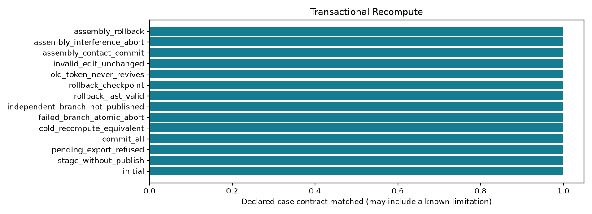

Offline, bounded research controls. A passing check may document a failure or an abstention.
| control_id | outcome | draft_pending | checks_pass |
|---|---|---|---|
| initial | initialized | False | True |
| stage_without_publish | staged | True | True |
| pending_export_refused | staged | True | True |
| commit_all | committed | False | True |
| cold_recompute_equivalent | committed | False | True |
| failed_branch_atomic_abort | aborted | True | True |
| independent_branch_not_published | aborted | True | True |
| rollback_last_valid | rolled_back | False | True |
| rollback_checkpoint | rolled_back | False | True |
| old_token_never_revives | rolled_back | False | True |
| invalid_edit_unchanged | rolled_back | False | True |
| assembly_contact_commit | committed | False | True |
| assembly_interference_abort | aborted | True | True |
| assembly_rollback | rolled_back | False | True |
Detailed evidence · CSV · Contract
